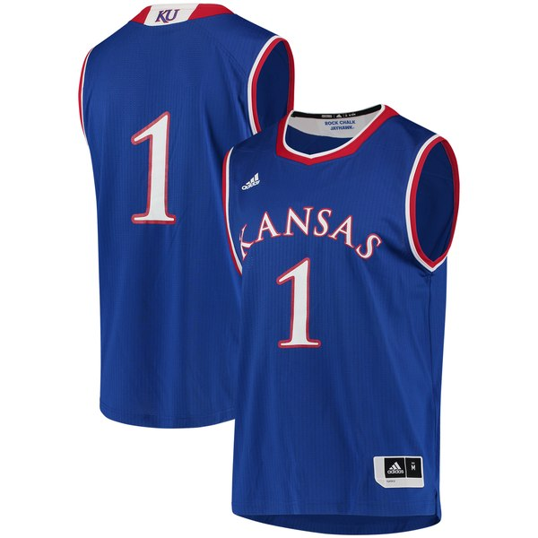

Purchase your jayhawk gear today!
Here are some links to my favorite Jayhawk highlights!:
Click here to buy gear!

Mario Chalmers three pointer to seal the 08' National title!
Head coach Mark Mangino leads the 2008 Jayhawk football team to an Orange Bowl Victory!